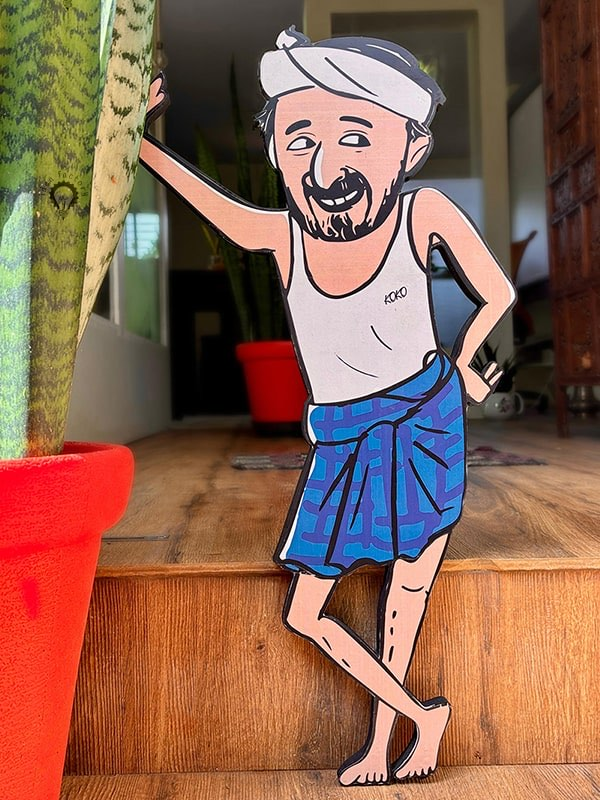

A Living Piece of Kerala Village Life
Nestled in the lush folds of Pustaka Gramam — "the village of books" — just a short drive from Kottarakara town, KoKo is a working farm rooted in the rhythms of traditional Kerala agriculture.
Here, banana groves rustle in the afternoon breeze, pepper vines climb ancient trees, and papaya gardens glow golden at harvest time. Our dream is simple: to invite you to slow down, get your feet muddy, and experience the warmth of village life — the way it has always been.
Kochattan — our resident village elder and your guide — knows every corner of this land and every story it holds. He can't wait to show you around.

